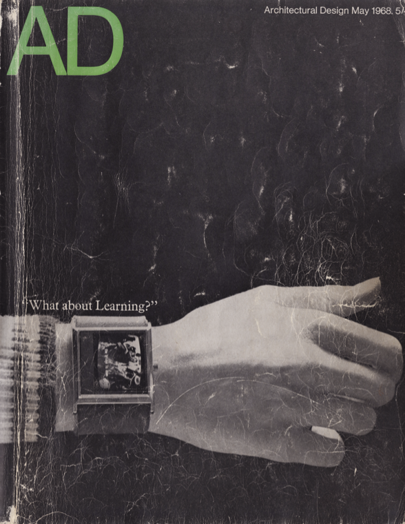
01 Entry / What about Learning?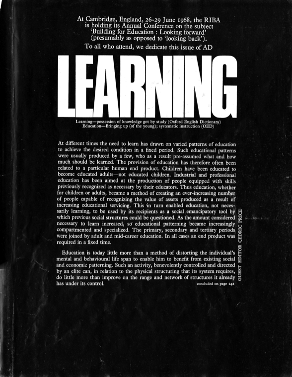
02 Editorial / p. 207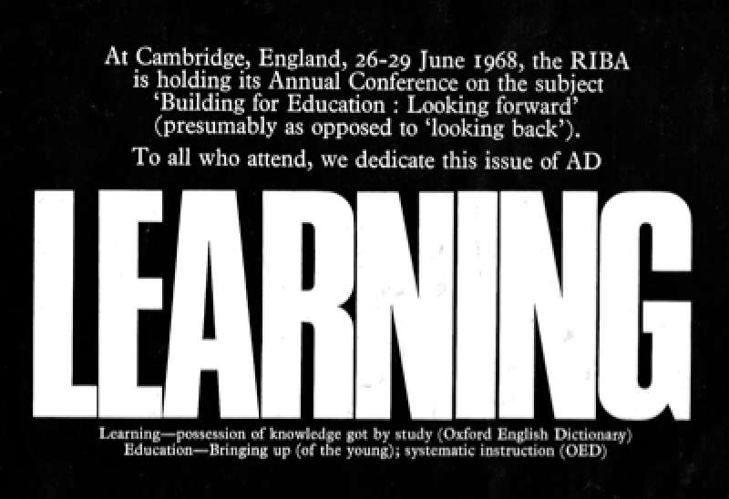
03 Learning / conference context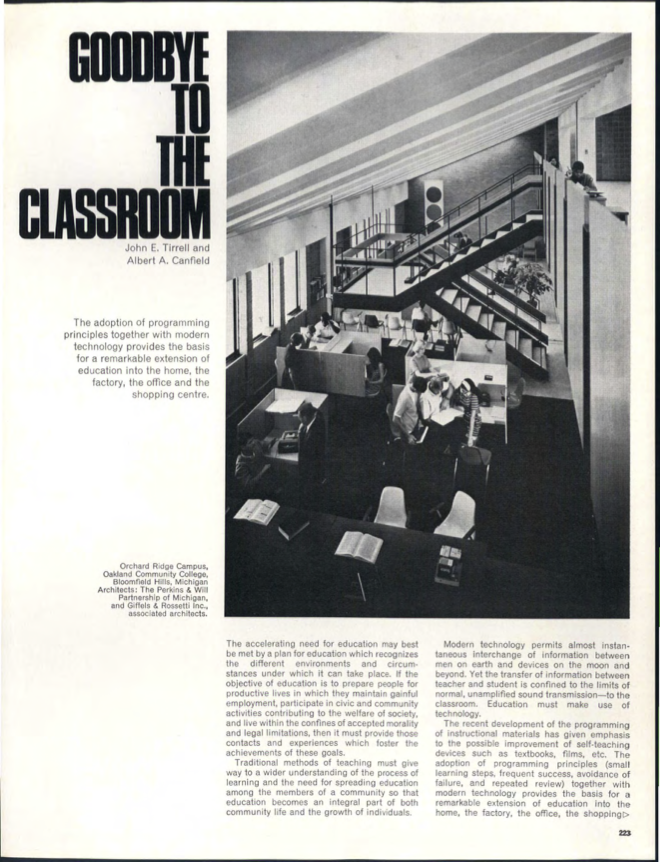
04 Beyond the classroom / p. 223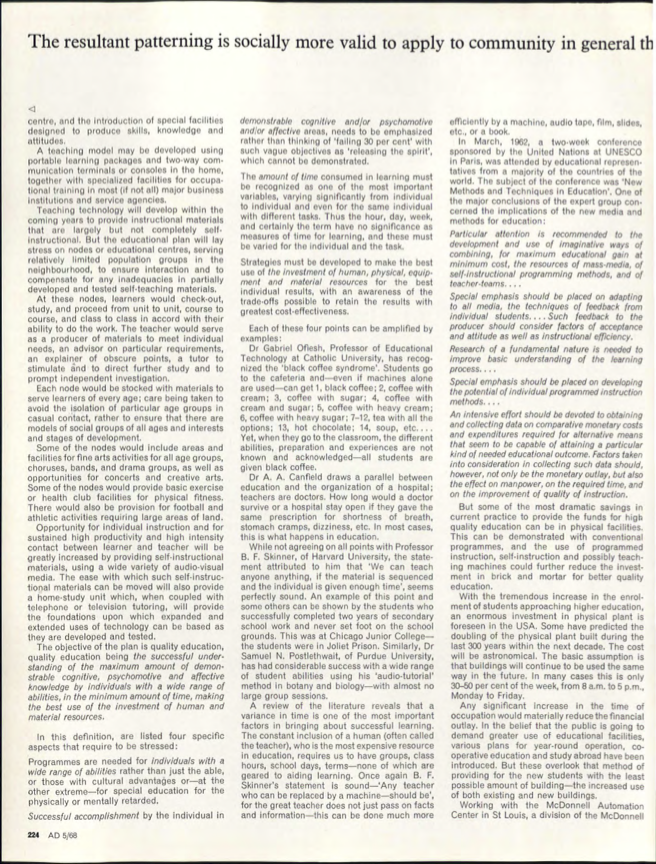
05 Educational planning / p. 224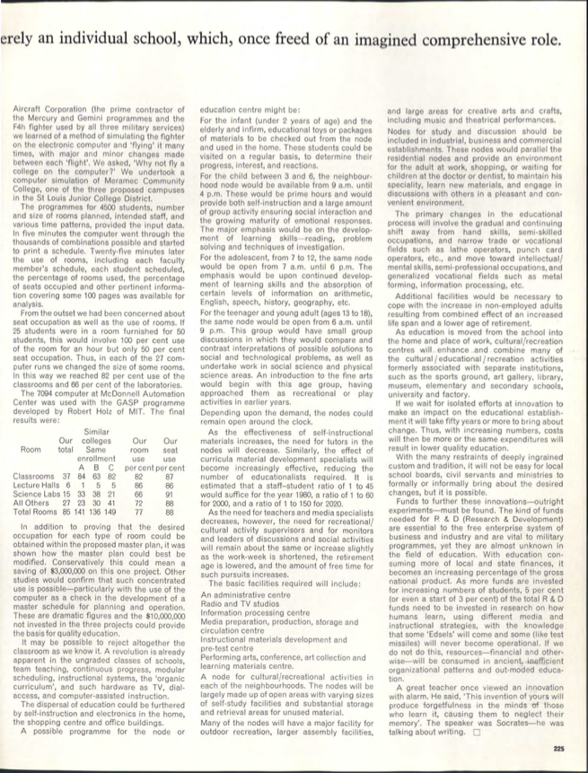
06 Educational resources / p. 225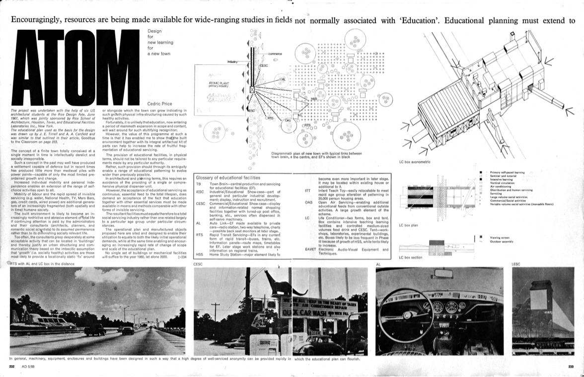
07 Atom / facilities within a town / pp. 232–233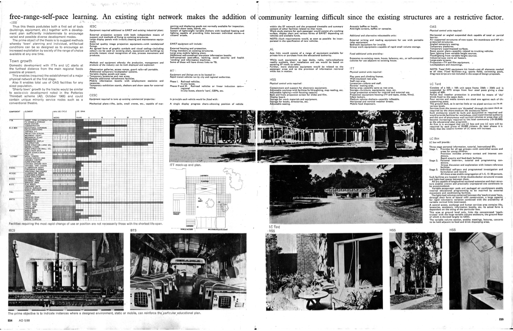
08 Atom / provision and change / pp. 234–235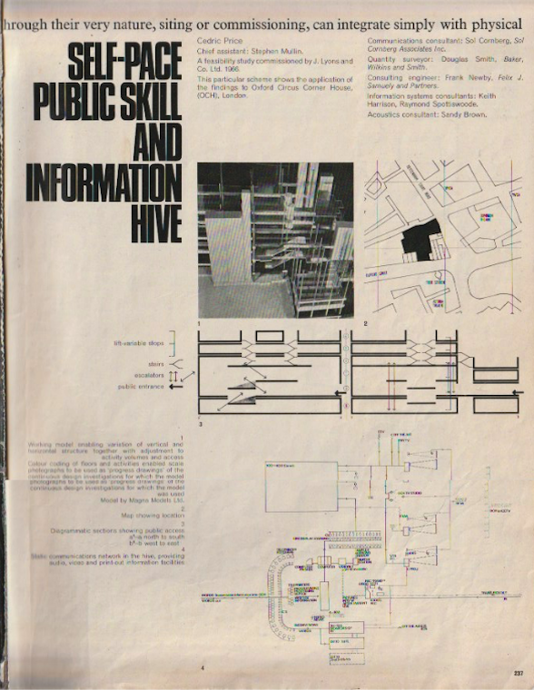
09 OCH / information hive / p. 237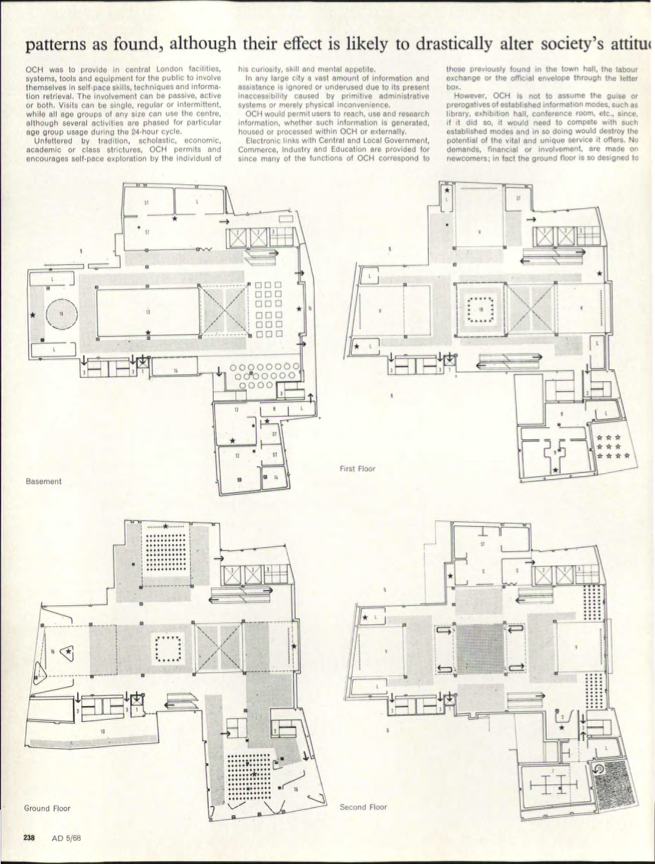
10 OCH / floor plans / p. 238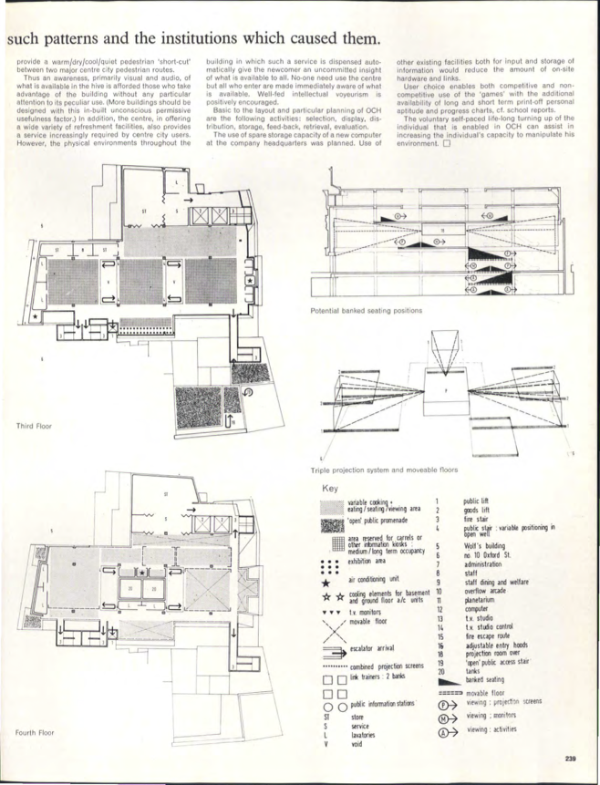
11 OCH / rearrangement / p. 239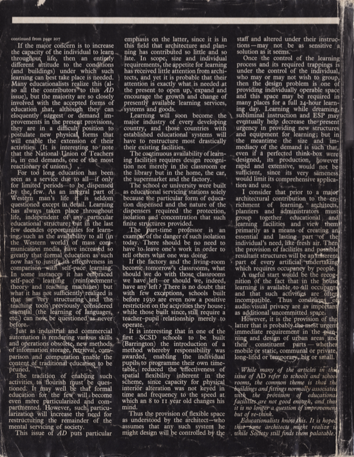
12 Editorial returns / p. 242